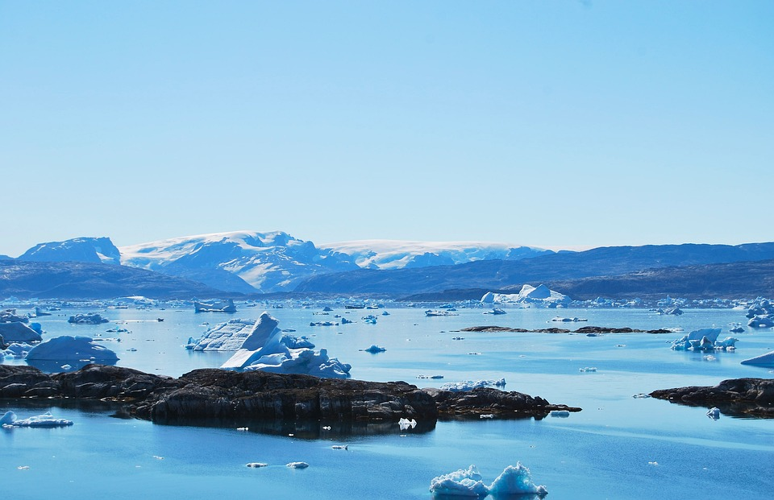
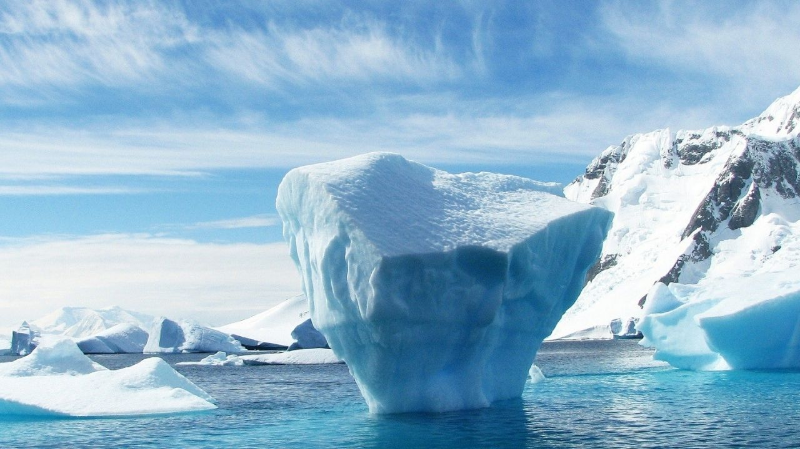

Sobre o Projeto
Através do Mar é um sistema RPG de mesa educacional que combina elementos de fantasia aquática com a curiosidades e a beleza dos mares, você joga com um dos animais mais misteriosos que habitam os oceanos profundos do Ártico. Neste mundo, os jogadores exploram reinos submarinos, interagem com civilizações marinhas e desvendam mistérios das profundezas enquanto tentam voltar para casa.
O Mundo
AquaLunna
No nosso mundo fictício você poderá explorar um mundo marítimo onde as lendas, magia e tradições são uma base fundamental. Descubra poderes da água e da lua ou enfrente estranhas forças que tentam atrasar seus planos. O universo vasto e misterioso está em suas mãos para se aventurar.

Características
Faça suas próprias campanhas ou use a campanha própria do sistema para poder ter sua versão dessa história onde você pode decidir o destino desse mundo.
Mude a rota e crie seu próprio caminho e mapas para seguir na sua jornada, cada atalho e direção pode trazer novos amigos e dificuldades para se enfrentar

Explore o que o mar pode te proporcionar e as estranhas correntes de magia que afloram das águas e corais, que podem tanto ajudar quanto dificultar o seu objetivo conforme suas escolhas e sorte